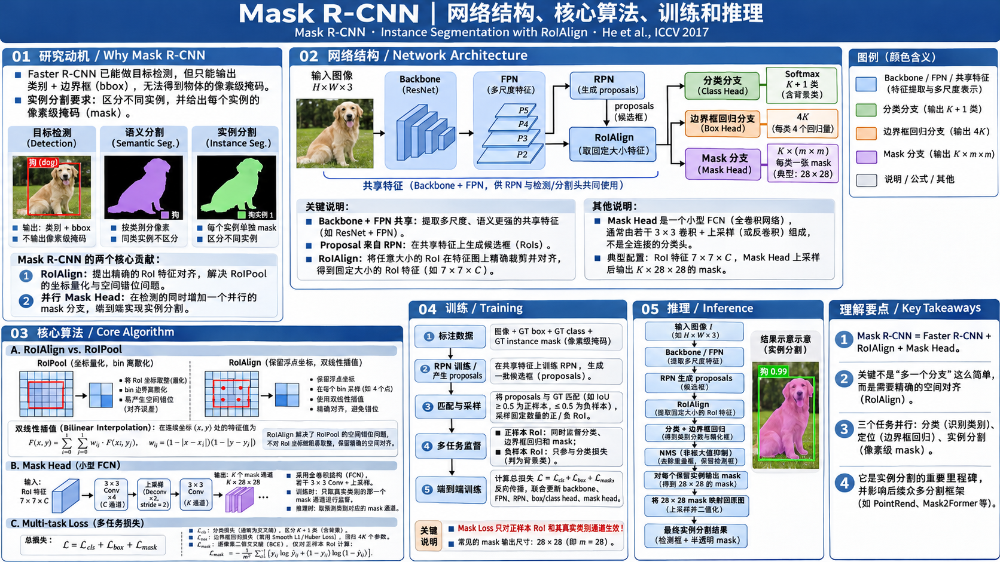

Mask R-CNN 算法原理研究笔记
Faster R-CNN 已经能回答“这是什么、在哪里”。Mask R-CNN 进一步回答“这个实例的哪些像素属于它”：在已有的分类与框回归旁边增加一条 Mask 分支，并用 RoI Align 保证特征与位置精确对齐。
为什么 Faster R-CNN 还不够？
不是让边界框更准一点，而是把研究目标从“目标检测”扩展到“实例级像素归属”。
每个对象：类别 + 边界框
一个框只能描述目标大致占据的矩形区域。框内可能包含背景，也无法准确表达目标的轮廓。
每个像素：属于哪个类别
两个相邻且同属一个类别的对象，可能在语义标签图里连成一片，无法直接区分独立实例。
每个对象：类别 + 框 + 独立 Mask
既识别对象类别和位置，也输出属于该实例的像素区域。两个同类对象有各自的 Mask。
网络结构：Faster R-CNN + 一条 Mask FCN
看清一次前向传播里的数据流、每个模块处理的特征形状、两个阶段之间的分工。

2.2 为什么要分别给检测与 Mask 两种 RoI 特征尺寸？
与 Faster R-CNN 的关系：RPN 与第二阶段框检测路径基本沿用既有体系；Mask R-CNN 主要新增逐 RoI 的掩码监督及 RoIAlign。分类、框回归和 Mask 是并行任务分支，不是“先分割再分类”的串行流程。
RoI Align：到底纠正了 RoI Pooling 的什么问题？
理解两个步骤就够了：先保留浮点坐标，再用双线性插值读取该位置的特征值。
3.2 双线性插值：采样点不落在整数格点上怎么办？
例如采样点位于四个相邻特征格点之间。并不把它强行舍入到某个像素，而是按距离对四个邻居加权。横向、纵向各插值一次，因此称为双线性插值。
+ (1−x)y·10 + xy·14
四个权重均由采样点的连续位置确定；采样得到的值对特征图上的相邻值是加权和，因此 Loss 的梯度可沿这些权重回传到特征图。
Mask Head：怎样从 RoI 特征图预测一个物体的像素形状？
核心机制：用卷积保留空间结构，每个类别独立输出二值 Mask，而不是先展平再用 FC 输出所有像素。
4.1 为什么每类预测一张 Mask，训练时却只监督一张？
Softmax (K+1)
分类头在类别之间竞争：一个 RoI 以“狗 / 猫 / 背景”等概率分布作整体判断。
Sigmoid (K × m × m)
每个像素在各个类别 Mask 通道上独立做二元前景预测，训练时仅使用 GT 类别的 Mask Loss。推理时只取分类头预测类别对应通道。
Lmask = − (1 / m²) Σᵢ [ yᵢ ln(pᵢ) + (1−yᵢ) ln(1−pᵢ) ]；只针对第 k 个 Mask 通道。
4.2 为什么同类对象也能分开？
Mask Head 的输入不是整幅图像的同一张特征图，而是每个检测 RoI 自己的 RoIAlign 特征。两个同类别的对象如果来自两个不同 RoI，就会得到各自的 Mask。预测的是“这个框内部哪些位置属于这个对象”，再投回原图。
完整训练：GT 框和 GT Mask 分别监督谁？
训练不是“把 Mask 输出变成框”，而是原有检测任务与实例分割任务共同约束网络。
+ RoIAlign按 IoU 匹配 GT
5.1 哪些 RoI 会进入三种 Loss？
原论文以 RoI 与真实框的 IoU 是否至少 0.5 来区分正负样本；Mask Loss 只对正样本定义。调节下方 IoU，观察监督分支变化。
5.2 三种 Loss 的确切职责
| 损失 | 监督的预测内容 | 使用什么 GT | 哪些 RoI 参与 |
|---|---|---|---|
| Lcls | K+1 类 Softmax 概率 | 匹配的 GT 类别，或背景 | 正样本与负样本 |
| Lbox | 4K 边界框偏移量 | GT 框坐标 | 仅正样本 |
| Lmask | 第 k 个 Mask 通道，m×m 个像素概率 | 将匹配 GT 实例 Mask 与 RoI 相交，再转换到目标网格 | 仅正样本，且仅 GT 类别 k 的通道 |
在完整检测框架中另有 RPN Loss。原论文默认三项以直接求和形式定义，具体归一化依赖各分支样本与像素数量。
5.3 反向传播到底更新哪些部分？
分类、框回归、Mask 三项 Loss 都能对其对应的预测 Head 求梯度，并通过 RoIAlign 的特征采样回传到产生特征图的卷积网络。RoIAlign 的双线性插值本质上是加权求和，所以梯度可分配回相邻特征像素。
完整推理：从图像到每个对象的独立 Mask
与训练时对采样 RoI 同时施加三项监督不同，原论文使用“先检测、再对保留框预测 Mask”的高效测试顺序。
6.1 从概率 Mask 到二值实例区域：0.5 阈值到底做了什么？
原论文以 0.5 对上采样后的概率图二值化。这里显示一个 14×14 的教学缩略示意；真实网络常输出 28×28，然后映射到检测框大小。
来自检测头，而非 Mask 均值
Mask R-CNN 原始方法没有另外学习 MaskIoU / Mask Quality 分数。最终实例的类别与检测置信度来自检测分支。
每个检测有自己的 Mask
不同对象的 Mask 可以在空间上重叠；它们首先是各自 RoI 上的独立预测，而不是一张全图互斥的像素类别分配图。
论文消融与历史意义：真正起作用的是什么？
区分设计本身的贡献与后来各种检测器复用的工程结构。
| 原论文对照 | 基线 | 改动后 | 结论（COCO mask AP） |
|---|---|---|---|
| RoIPool → RoIAlign | 26.9 | 30.3 | +3.4 AP；ResNet-50-C4，RoIAlign 平均聚合版本 |
| 像素 Softmax → 独立 Sigmoid | 24.8 | 30.3 | +5.5 AP；ResNet-50-C4，类别与 Mask 解耦 |
| ResNet-101-C4 → ResNet-101-FPN | 33.1 | 35.7 | 原论文 COCO test-dev，加入 FPN 提升多尺度表示 |
与前代网络的传承
Faster R-CNN：提供 RPN、RoI 检测、分类与框回归。
FPN：提供多尺度共享特征金字塔。
FCN：启发保留二维空间的掩码预测分支。
Mask R-CNN：以 RoIAlign 联通检测与像素级分割，并设计独立二值掩码监督。
主要局限和适用边界
保留两阶段 Proposal、RoI 处理与 NMS，结构较复杂；每个实例独立预测 Mask，目标数量多时存在计算与显存开销；小物体和精细边缘仍受有限分辨率与特征尺度约束。RoIAlign 减少坐标量化偏差，但不能凭空恢复 Backbone 中已丢失的细节。
最后用三句话记住 Mask R-CNN
可以从这四个问题重新推导出整个模型。
要从框定位走向实例分割
一个检测框不等于对象的像素轮廓；需要分清同类多个实例。
RoIAlign + 并行 Mask FCN
减少坐标量化，保留二维空间特征，给每个 RoI 输出 K 个独立的二值掩码。
训练三项监督，测试按框生成 Mask
分类和回归沿用 Fast/Faster R-CNN；Mask 只监督正样本的 GT 类别通道。
He, Kaiming; Gkioxari, Georgia; Dollár, Piotr; Girshick, Ross. Mask R-CNN. ICCV 2017, pp. 2961–2969.